Ferienwohnung · Weißenburg in Bayern
Mittendrin in der Altstadt.
Gemütlich wohnen in einem Baudenkmal von 1744 – Marktplatz, Römermuseum und Ellinger Tor liegen direkt vor der Haustür.
Willkommen in Weißenburg
Römerstadt, Reichsstadt, Seenland
Eine weitgehend erhaltene Stadtmauer, römische Thermen und das Fränkische Seenland gleich um die Ecke: Weißenburg ist ein Ort zum Ankommen und Entdecken.
Die Lage
Alles zu Fuß erreichbar
- Römermuseum & Tourist-Infonebenan
- Marktplatz & Altes Rathaus3 Min.
- Ellinger Tor3 Min.
- Bahnhof6 Min.
Pfarrgasse 3
Ein Haus mit Geschichte
Das ehemalige Pfarrwitwenhaus wurde 1744–46 erbaut und steht unter Denkmalschutz. Außen dicke Mauern, innen modern und gemütlich eingerichtet.
Kartendaten © OpenStreetMap-Mitwirkende
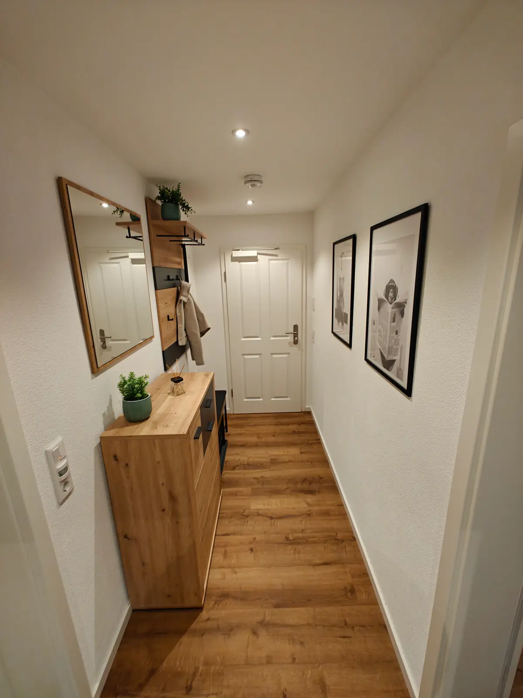
1 Ankommen
Herzlich willkommen!
Jacke an die Garderobe, Schuhe in den Schrank – und schon sind Sie zu Hause auf Zeit.
2 Wohnküche
Das Herz der Wohnung
Offene Wohnküche mit Kochinsel, Holztresen und gemütlicher Sofaecke. Die tiefen Fensternischen verraten das Alter des Hauses.
2 Wohnküche
Kochen wie zu Hause
Kochfeld, Backofen, Spüle und viele Schränke – da macht auch der Kochabend im Urlaub Spaß.
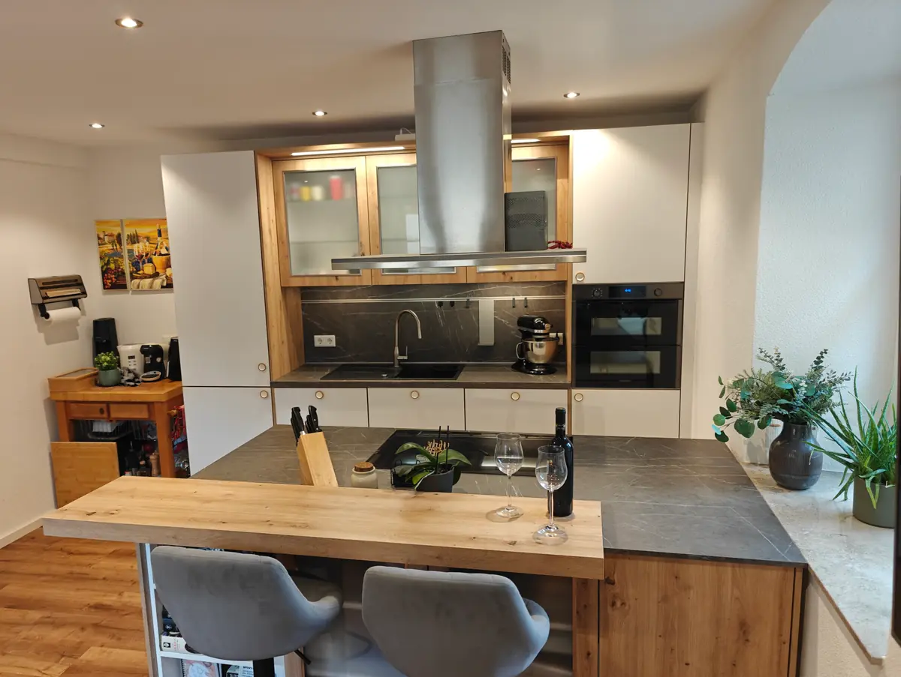
2 Wohnküche
Frühstück am Tresen
Zwei bequeme Barhocker, ein Holztresen und der erste Kaffee des Tages – mit Blick aus dem Fenster.
2 Wohnküche
Liebe zum Detail
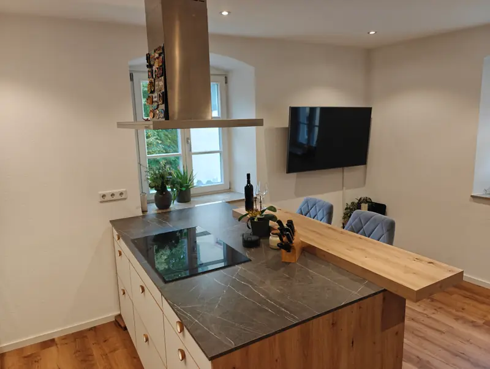
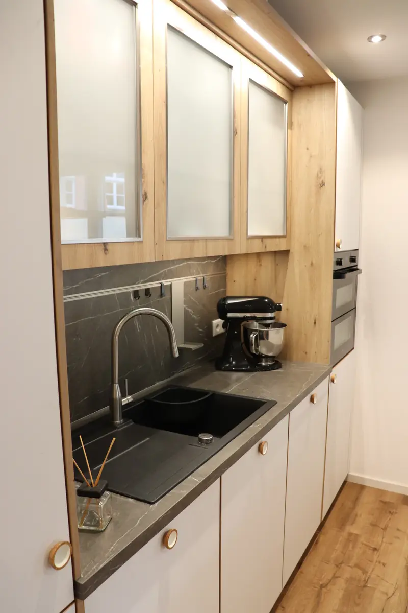
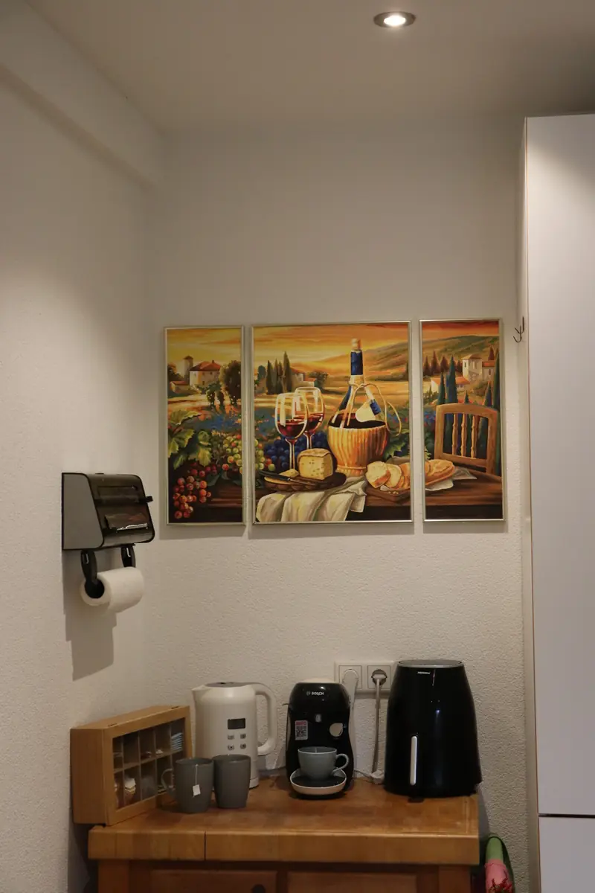
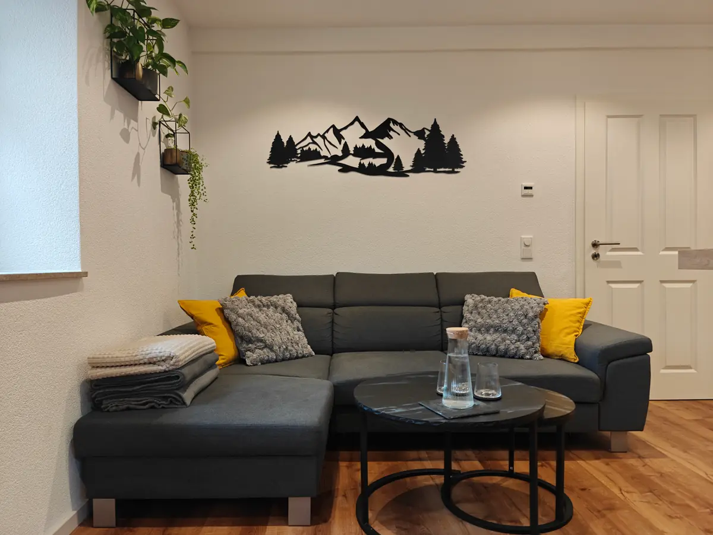
3 Wohnen
Feierabend auf dem Sofa
Großes Ecksofa mit Kissen und Kuscheldecken, Couchtisch und Fernseher – genau richtig nach einem Tag am See oder in der Altstadt.
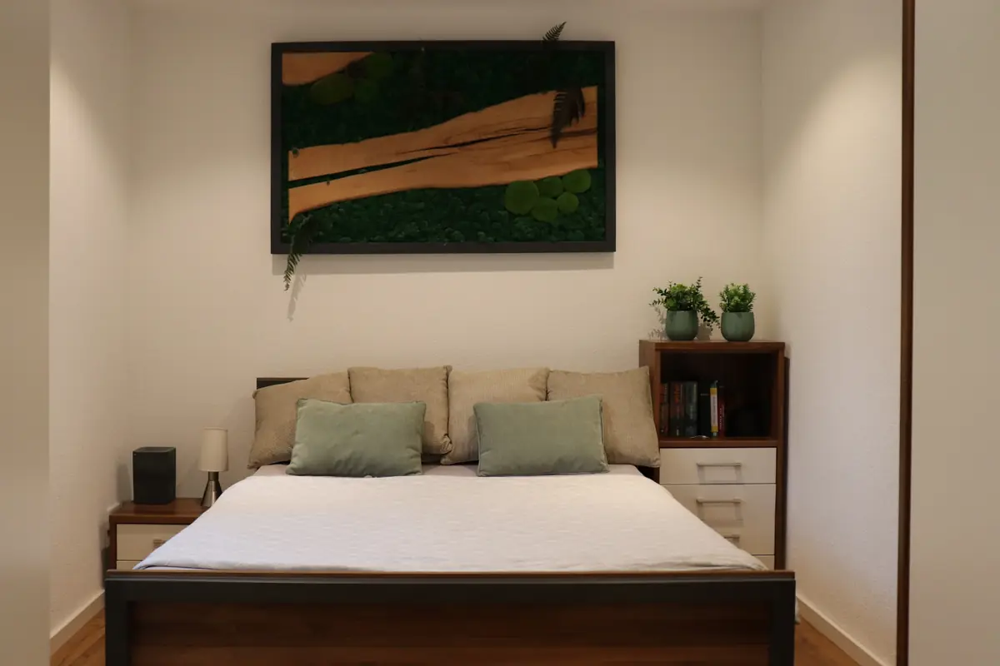
4 Schlafen
Gute Nacht in der Altstadt
Gemütliches Doppelbett, Nachttisch mit Lampe und eine Kommode für Ihre Sachen.
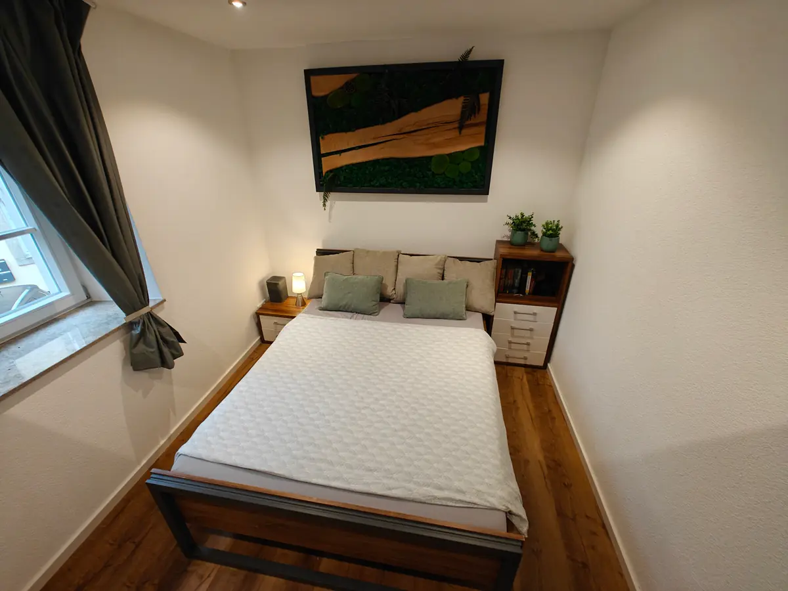
4 Schlafen
Hell und gemütlich
Warmes Licht am Abend, eine Leselampe am Bett und ein Moosbild als kleines Stück Natur an der Wand.
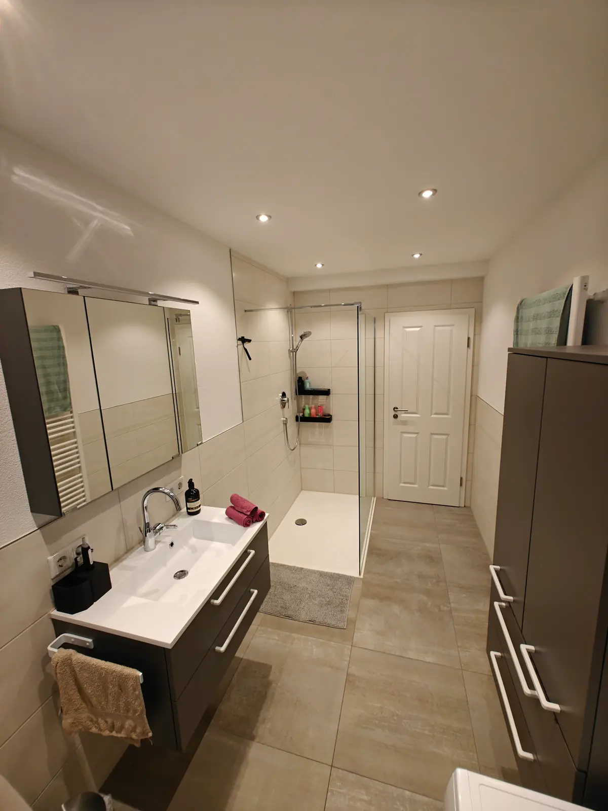
5 Bad
Helles Bad mit Fenster
Waschtisch mit Spiegelschrank, viel Ablagefläche und eine große Dusche mit Glaswand.
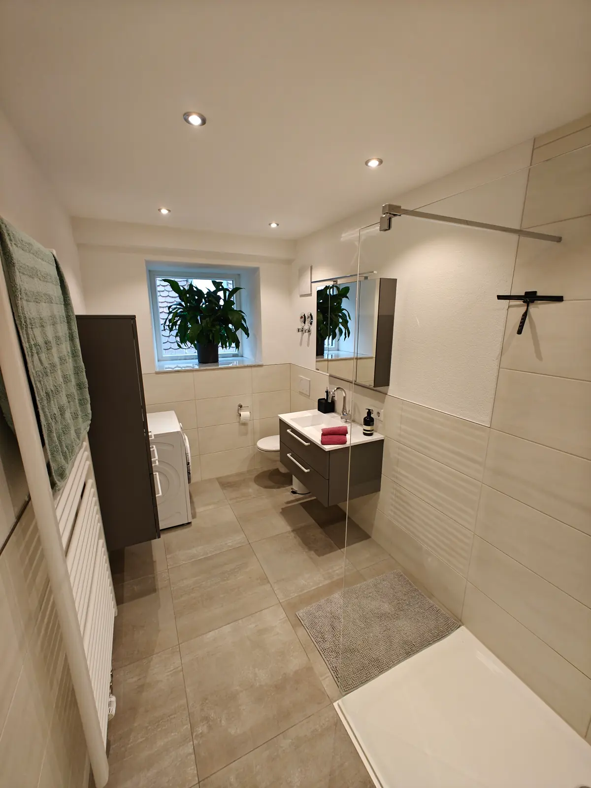
5 Bad
Praktisch gedacht
Tageslicht durchs Fenster, ein Handtuchheizkörper und sogar eine eigene Waschmaschine.
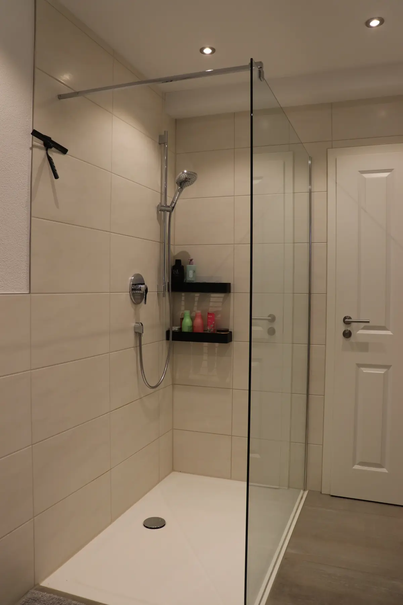
5 Bad
Viel Platz unter der Dusche
Große Dusche mit Glaswand, Ablagen und Handbrause.
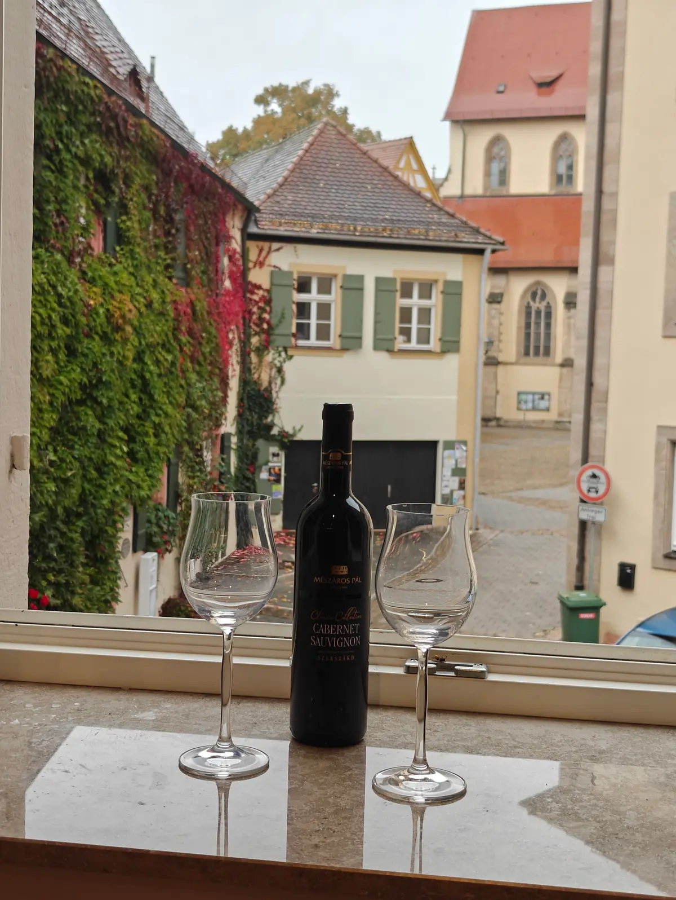
6 Ausblick
Und dann dieser Blick
Kopfsteinpflaster, weinberankte Fassaden und die Kirche direkt gegenüber – die Altstadt beginnt vor Ihrem Fenster.
Ausstattung
Die Wohnung auf einen Blick
- Wohnküchemit Kochinsel
- Schlafzimmermit Doppelbett
- Badmit Fenster & Dusche
- Ausblickauf die Altstadt
Küche
- Kochinsel mit Kochfeld
- Backofen
- Kapsel-Kaffeemaschine
- Wasserkocher
- Heißluftfritteuse
- Küchenmaschine
Wohnen & Schlafen
- Großes Ecksofa mit Decken
- Fernseher
- Tresen mit zwei Barhockern
- Doppelbett mit Nachttisch
- Kommode & Garderobe
Bad
- Große Dusche mit Glaswand
- Spiegelschrank
- Handtuchheizkörper
- Waschmaschine
Lage
Mitten in der Altstadt – alles zu Fuß
Die Wohnung liegt in der Pfarrgasse, direkt am Martin-Luther-Platz. Museen, Cafés, Restaurants und der Marktplatz sind nur ein paar Schritte entfernt.

- 1St. Andreas, Römermuseum & Tourist-Infoam Martin-Luther-Platz1 Min.
- 2Marktplatz & Altes RathausCafés, Eisdielen, Wochenmarkt3 Min.
- 3Ellinger TorWahrzeichen der Stadtmauer3 Min.
- 4Spitaltorsüdliches Stadttor3 Min.
- 5Kulturzentrum KarmeliterkircheKonzerte & Veranstaltungen4 Min.
- 6BahnhofAnreise ohne Auto6 Min.
- 7SeeweiherSpazieren an der Stadtmauer8 Min.
- 8Römerkastell Biricianarekonstruiertes Nordtor9 Min.
- 9Römische Thermeneine der besterhaltenen Badeanlagen Süddeutschlands14 Min.
Gehzeiten ungefähr, zu Fuß ab der Wohnung.
Ausflüge in die Umgebung
- Festung Wülzburgca. 2,6 km
- Bergwaldtheaterca. 1,8 km
- Großer Brombachseeca. 12 km
- Altmühlseeca. 21 km
Entfernungen Luftlinie. Weißenburg liegt im Naturpark Altmühltal und gehört zum Fränkischen Seenland.
Kontakt
Fragen zur Wohnung?
Melden Sie sich einfach direkt bei mir – telefonisch oder per Nachricht.
Fabian Bischoff
Ihr Gastgeber in Weißenburg
- Telefon
- +49 1515 8121835
- Info folgt
- Adresse der Wohnung
- Pfarrgasse 3, 91781 Weißenburg in Bayern